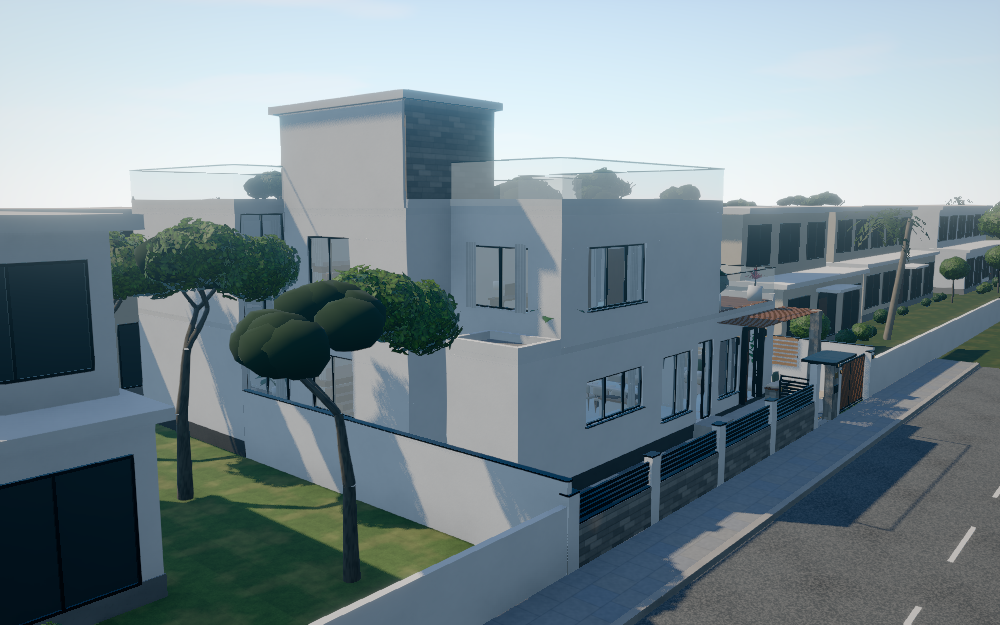

Tirumala 4 · exterior update · 31 October 2026
My Desired Home finishes.
Open, green surroundings.
The exterior now uses the reference home's warm off-white plaster, textured stone accents, charcoal window surrounds and timber details. Glass has a stronger reflective finish. The adjoining house placeholders have been replaced with grass following your correction.
Off-white plasterTextured stoneCharcoal framesTimberBlue-green glass
 Updated northeast view. Existing house footprint, entrance, veranda and G+1 layout retained.
Updated northeast view. Existing house footprint, entrance, veranda and G+1 layout retained.
East frontage · before and after
 Before. Previous facade and adjoining house placeholder.
Before. Previous facade and adjoining house placeholder.
 Now. Darker window outlines, textured stone bay and grass beside the property. Opening sizes are unchanged.
Now. Darker window outlines, textured stone bay and grass beside the property. Opening sizes are unchanged.
Reference and softer daylight

My Desired Home. Used as the wall, stone, window-frame and timber reference.
 Tirumala 4 · overcast. The same materials under softer lighting.
Tirumala 4 · overcast. The same materials under softer lighting.
40 × 50 ft plot, all room dimensions, opening sizes, door operations, staircase and approved G+1 layout preserved.
Verification results.
These are screenshots of the interactive model. The adjoining land is shown as grass; the photographed garden and road-opposite buildings remain as colony context. The exterior wall finish is applied to outward-facing surfaces. Interior plaster and room geometry are unchanged.
Run bash start.sh from the project folder, then choose Sample Projects → Tirumala 4. Reload an already-open viewer.